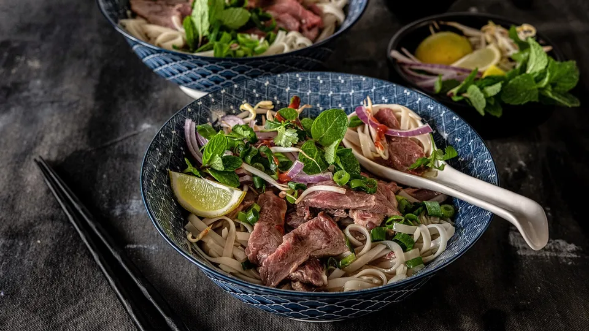

Pho Bo

Description
This is a recipe for Pho Bo (Vietnamese beef noodle soup) from recipes.co.nz. I haven't actually tried this recipe before so i'm not sure if its any good.
Ingredients
- 600g scotch fillet steaks
- 1 onion peeled and quartered
- 1 thumb size piece of fresh ginger thickly sliced
- 1 cinnamon stick
- 2 whole star-anise
- 3 garlic cloves
- 1 tsp coriander seeds
- 1.5L beef broth
- 1 tbsp sugar
- 1 tbsp fish sauce
- 2 carrots cut into large chunks
- 375g rice noodles soaked and drained
Steps
- Turn on oven to broil/grill at max setting. Place oven rack high inside the oven. Line a tray with foil and arrange onion and ginger in 1 layer. Broil for 20 to 30 minutes until charred in some spots.
- Place steak in the freezer for 40 minutes to firm up. Slice thinly and set aside to bring to room temperature.
- While that is happening, place cinnamon, star anise, coriander seeds, peppercorns and cloves in a dry frying pan and toast on medium heat, stirring frequently, for 3 minutes until fragrant.
- Pour broth and water into a large saucepan and bring to a boil.
- Add the toasted aromatics, carrots, fish sauce, brown sugar, and salt. Add charred onions and ginger. Reduce heat and simmer uncovered for 40 minutes.
- While the broth is cooking, prepare the topping ingredients and arrange into a couple of dishes.
- Using a mesh strainer or slotted spoon, remove and discard the solid ingredients from the broth. Season to taste. Turn the heat up and bring the broth to a rolling boil.
- Cook noodles in boiling water for 2-3 minutes. Drain and divide the hot noodles into four bowls.